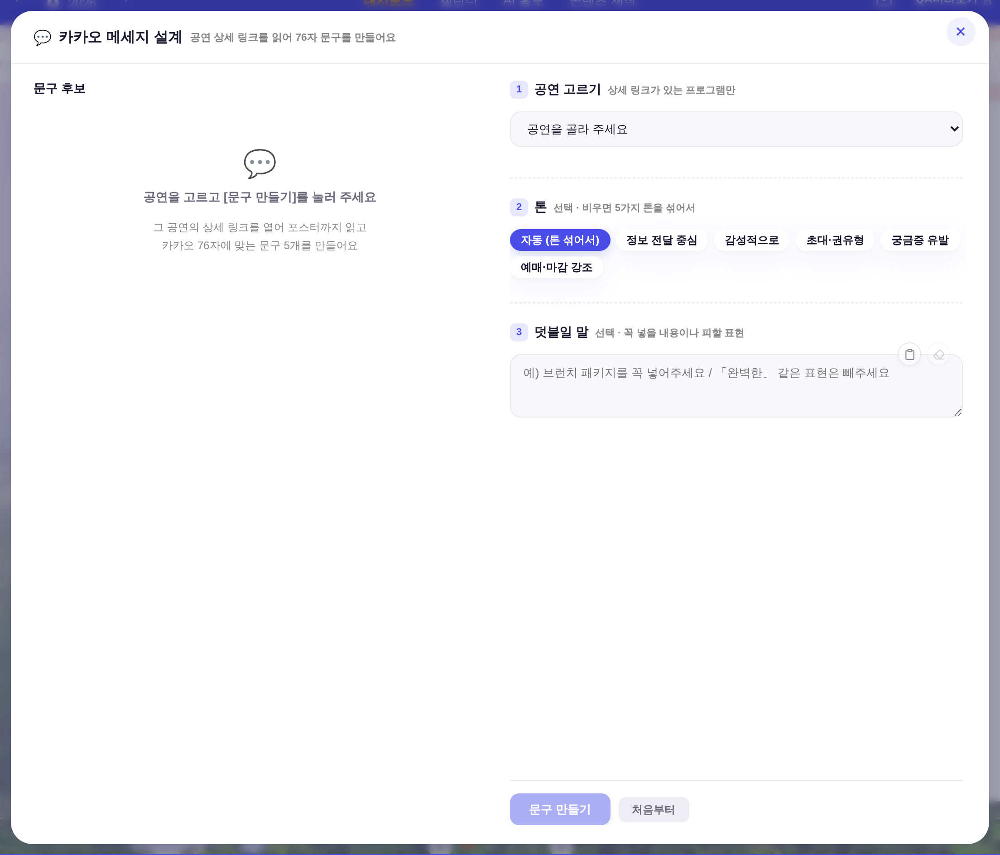
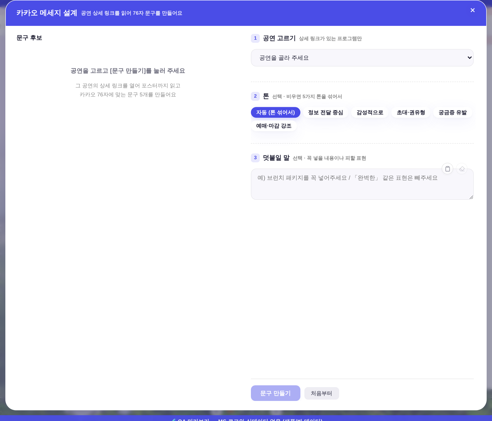
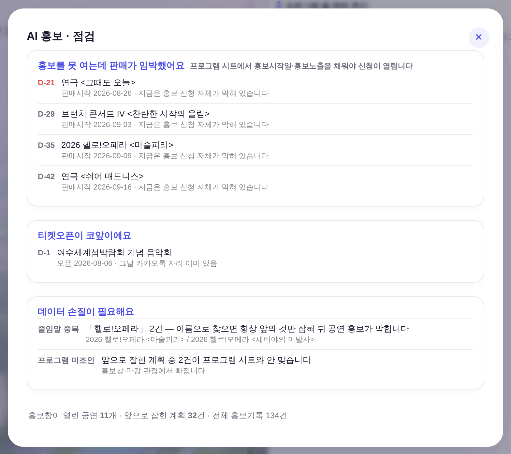
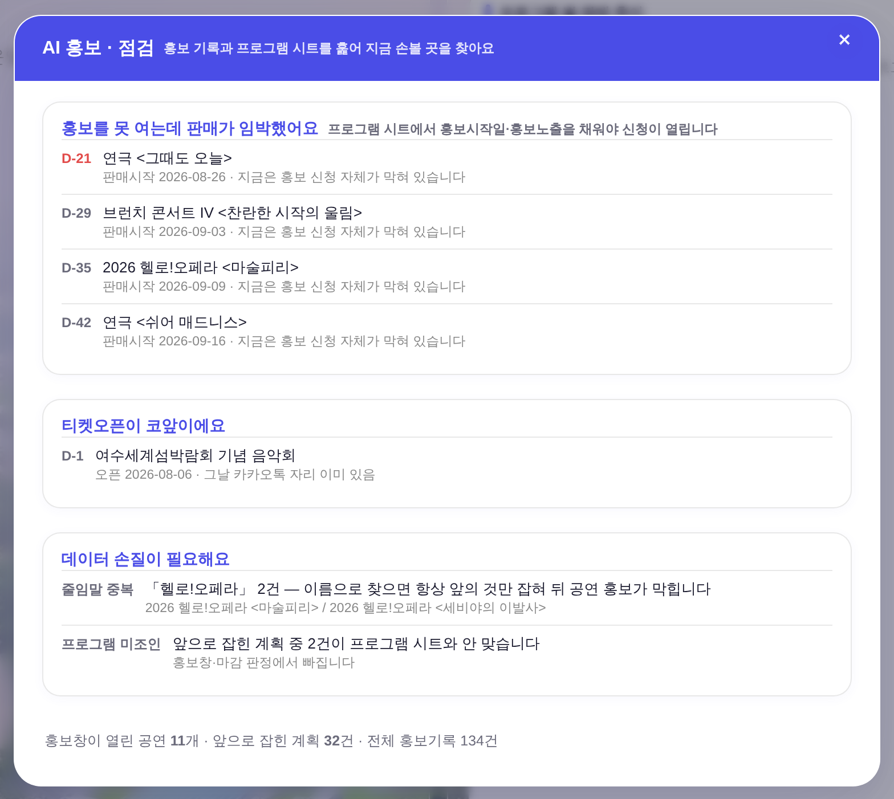

운영자 지시 260805 「①AI 홍보 틀을 카카오 설계(첨부1)와 같은 기본 목업으로 ②카카오 설계 머리줄 라인 = 강조색1 음영 + 그에 맞는 글자색 ③이모지 가능한 안 씀」 ·
대상 = openKakaoDesigner()(콘텐츠 제작 ▸ 카카오 메세지 설계) + openPromoCheck()(상단 대메뉴 AI 홍보) ·
화면 = ?qa=admin + 운영자 스샷 재현 목데이터(tools/scratch/shot_headband_ba.mjs) · 실API·실데이터·PII 미접촉 · 1440×1000.
머리줄 = --accent 채움 · 제목 --surface-solid(흰) · 부제 흰 .85 · X 흰 잉크. 헤더 💬·빈상태 💬 픽토그램 제거.


셸을 카카오 설계와 같은 구성으로: padding:0 모달 + 머리줄 밴드(제목 16px/700 + 부제) + 본문 자체 패딩·스크롤. 본문(진단 카드·집계줄)은 무변.


헤드리스 실측(tools/scratch/shot_headband_ba.mjs) · getComputedStyle·getBoundingClientRect 원값.
| 항목 | 전 | 후 | 비고 |
|---|---|---|---|
| 머리줄 배경 (두 모달) | 투명 (카카오는 hairline 하변) | rgb(74,77,231) = --accent |
강조색1 (기틀 §0①) · 두 모달 동일값 |
| 제목 잉크 | rgb(26,26,46) --text |
rgb(255,255,255) --surface-solid |
흰 on --accent = 6.0:1 (AA) |
| 제목 활자 (AI 홍보) | 17px / 800 — 앱에서 이 하나뿐 | 16px / 700 | 모달 제목 정본에 합류 (260805-15 §5 짚음 해소) |
| 부제 (AI 홍보) | 없음 | 「홍보 기록과 프로그램 시트를 훑어 지금 손볼 곳을 찾아요」 | 카카오 설계 부제 문법 계승 · 흰 .85(기존 알파스텝) |
| X 잉크·글자 | --accent · ✕ | 흰 · ✕(U+2715 유지) | 게이트 ⑦(정본 부품) 통과 · 두 모달 같은 자리 |
| 밴드 높이 (두 모달) | — / 58px | 57px / 57px | 같은 패딩(18px 24px) · hairline 제거분 −1 |
| 이모지 (💬📡📭) | 카카오 2곳 · AI 홍보 2곳(빈상태) | 0곳 | 운영자 「이모지 가능한 안 씀」 |
_promoCheckScan)·카드·집계줄, 카카오 설계의 3단계 입력·후보 카드 엔진은 한 줄도 안 바꿨다. 바뀐 것은 틀(머리줄·패딩 구조)뿐이다.var(--accent) · 제목 var(--surface-solid) · 부제 rgba(255,255,255,.85)(index.html 기존 알파스텝 3곳 재사용 · §3.5② 흰 alpha 변주). check_design.py = 통과 (index 1578/1578 무변).#fff on #4A4DE7 = 6.0:1 (WCAG AA 4.5:1 통과 · 260805-11 「accent on 흰 6.0:1」의 역방향 동값).:root 0 — 정본 .modal/.modal-x/.u-empty/.bizm-card 그대로. 셸 값은 카카오 설계 기존 인라인의 자구 계승.✕(U+2715) + title·aria-label 한 벌 · 게이트 ⑦ 83곳 전건 정본. 잉크만 흰색(정본 잉크 --accent는 accent 밴드 위에서 소실)..u-empty 아이콘 없는 용례 = AI 홍보 빈상태가 이미 쓰던 정본 변형 — 카카오 빈상태도 같은 형태로(창작 0).